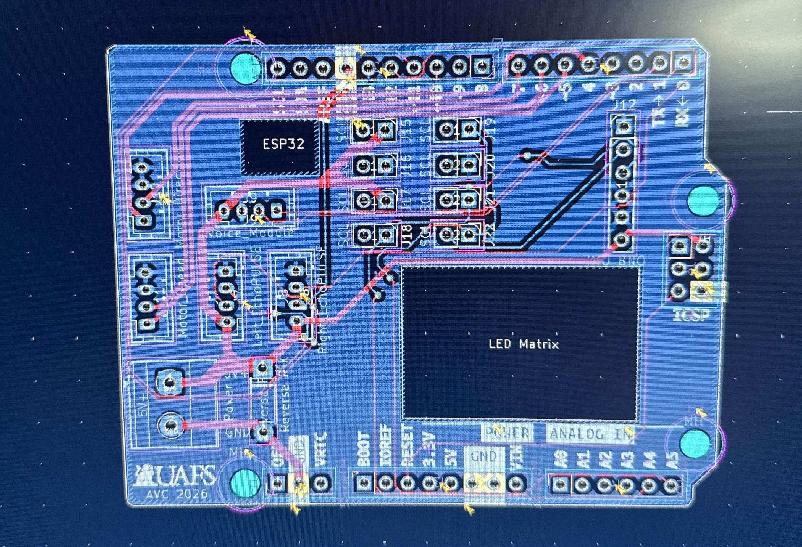
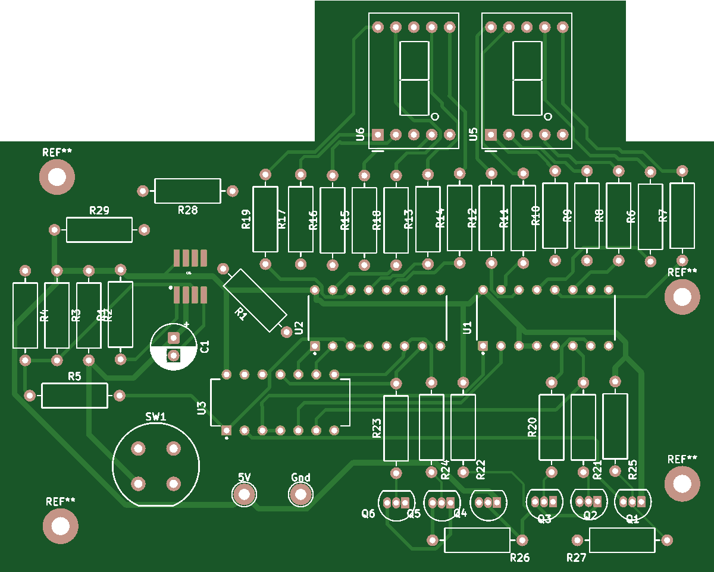
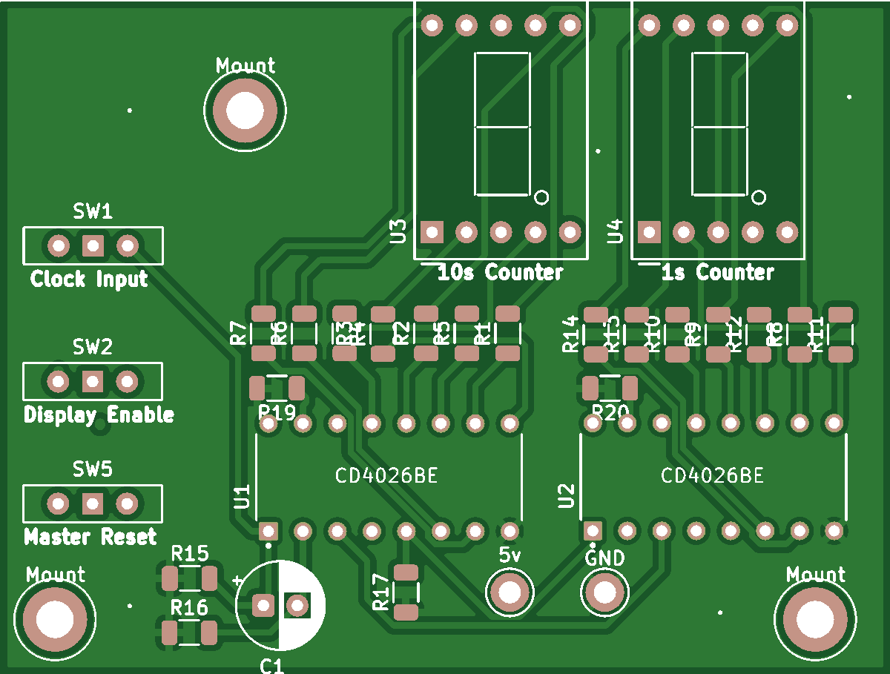
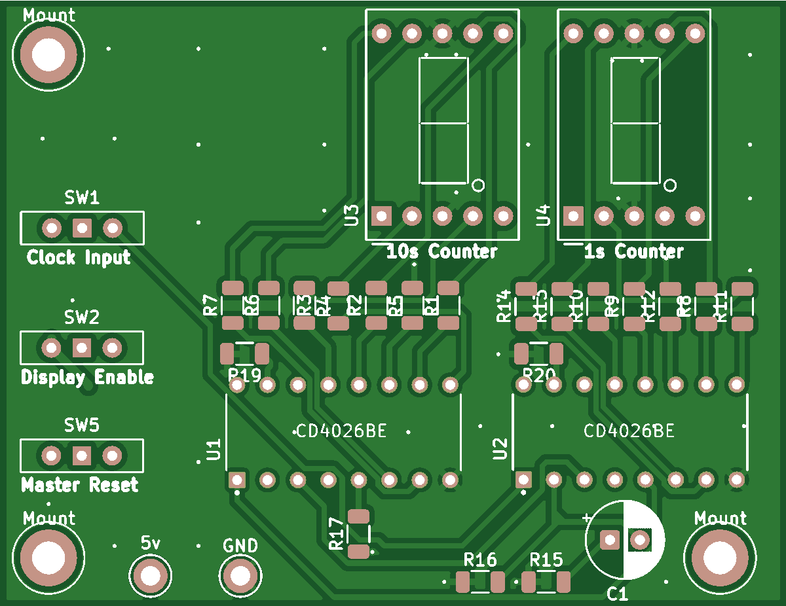
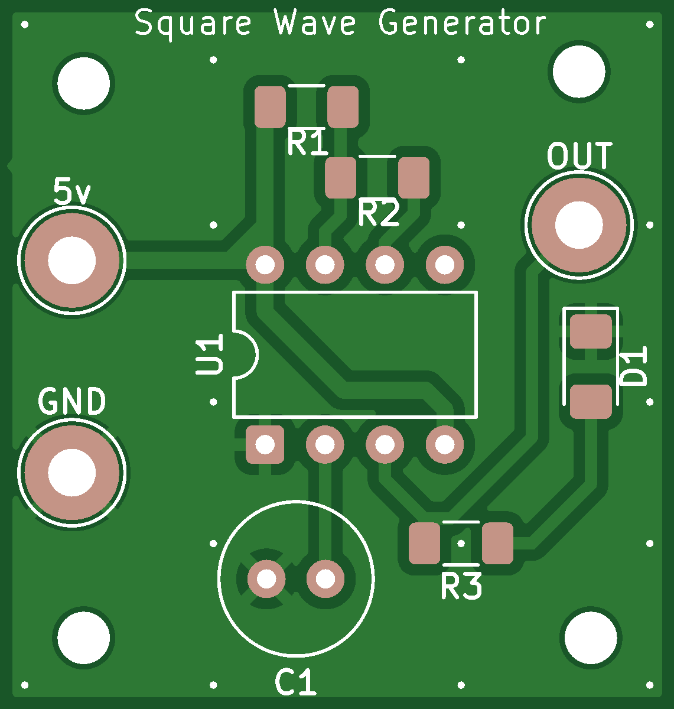

Project Directory
Autonomous Vehicle Uno Hat
Overview
During the Autonomous Vehicle Challenge, the vehicle suffered from intense vibration across the competition floor. Standard breadboard jumper wires frequently wiggled loose, causing critical sensor failures. To solve this, I designed a custom printed circuit board that acts as a "Hat" or shield sitting directly on top of the Arduino Uno R3.
The board serves as the central nervous system for the lower-level hardware, consolidating power distribution and providing dedicated, locking JST connectors for all environmental sensors (IMU, Ultrasonics, Voice modules).

Core Parts List
- Arduino Uno R3 Female Headers
- JST-XH 4-Pin / 5-Pin Connectors
- Buck Converter (12V to 5V Step-Down)
- Decoupling Capacitors (Ceramic 100nF)
- SMD Diagnostic Test Points
Conclusion
By migrating to a manufactured PCB, sensor dropouts were entirely eliminated. The inclusion of diagnostic test points allowed the team to probe logic lines with an oscilloscope directly on the field without disconnecting any hardware. This reliability upgrade was a major factor in securing 1st place in the 2025-2026 season.
Piezo Amplifier Circuit
Overview
Piezoelectric elements are incredibly sensitive but produce notoriously high-impedance, low-current signals that are difficult for standard microcontrollers to interpret accurately. This project involved designing a custom amplification and signal-conditioning board specifically for interfacing with piezo transducers.


Core Parts List
- Operational Amplifiers (e.g., TL072 / LM358)
- Piezoelectric Transducer
- 1MΩ+ Input Bias Resistors
- Low-Pass Filter Ceramic Capacitors
- BNC / Screw Terminal Connectors
Conclusion
The final board successfully buffered the high-impedance input and amplified the micro-volt piezo pulses into clean, readable 3.3V analog signals. Learning to manage parasitic capacitance in the PCB trace routing was critical for maintaining signal integrity in this project.
ATtiny85 Counter Carrier Board
Overview
After reaching the limits of purely discrete hardware counters (detailed below), I transitioned the counting logic to software using the 8-bit ATtiny85 microcontroller. Because the ATtiny85 has limited pins, this carrier board was designed to integrate the MCU with shift registers to drive external displays while maintaining a minimal physical footprint.

Core Parts List
- ATtiny85 Microcontroller (DIP-8)
- 74HC595 8-bit Shift Register
- ISP (In-System Programming) 6-Pin Header
- Push-button Tactile Switches
- 10kΩ Pull-up Resistors
Conclusion
This carrier board represented a massive leap in efficiency. By moving the counting logic into C++ software flashed to the ATtiny85, I was able to implement software debouncing for the buttons, drastically reduce the total component count, and create a board that could be reprogrammed via the ISP header without needing to fabricate a new PCB.
Discrete Hardware Counters (3 Revisions)
Overview
Before moving to microcontrollers, I spent significant time mastering digital logic by building entirely hardware-based counting circuits. Over three distinct PCB revisions, I designed boards that accepted manual pulse inputs and drove dual 7-segment displays (00 to 99) using only discrete logic ICs.
Each revision aimed to condense the board footprint, optimize the trace routing to minimize electromagnetic noise, and implement hardware debouncing (using RC circuits and Schmitt triggers) to prevent false double-counts when the physical button was pressed.



Core Parts List
- 74HC192 (Synchronous Decade Up/Down Counters)
- 74LS47 (BCD to 7-Segment Decoders)
- Dual 7-Segment Displays (Common Anode)
- 74HC14 (Hex Inverting Schmitt Trigger for Debouncing)
- Current Limiting Resistor Arrays
Conclusion
Designing three revisions of this board provided invaluable experience with KiCad layout software. I learned how to manage complex routing with dozens of intersecting data lines on a 2-layer board, utilizing vias effectively without fracturing the ground plane. While the ATtiny85 ultimately replaced this design, the foundational knowledge of digital logic propagation delay and hardware debouncing remains critical to my embedded engineering workflow.
555 Timer Square Wave Generator
Overview
Every electronics workbench needs a reliable clock signal. This project is a custom PCB housing a 555 Timer IC configured in Astable mode to generate a continuous square wave. The board features onboard potentiometers allowing the user to actively tune both the frequency and the duty cycle of the output wave.
The frequency ($f$) of the generated wave is governed by the values of the onboard resistors and capacitors according to the standard astable equation:

Core Parts List
- NE555 Precision Timer IC
- 100kΩ Trimpot Potentiometers
- 10µF Electrolytic Timing Capacitor
- 10nF Ceramic Control Voltage Capacitor
- Indicator LEDs
Conclusion
This was an excellent exercise in creating a functional piece of lab equipment. The layout prioritized ease of use, placing the tuning potentiometers and test probe loops at the edges of the board. The resulting module provides a clean, adjustable clock pulse perfect for testing the hardware counters mentioned above.